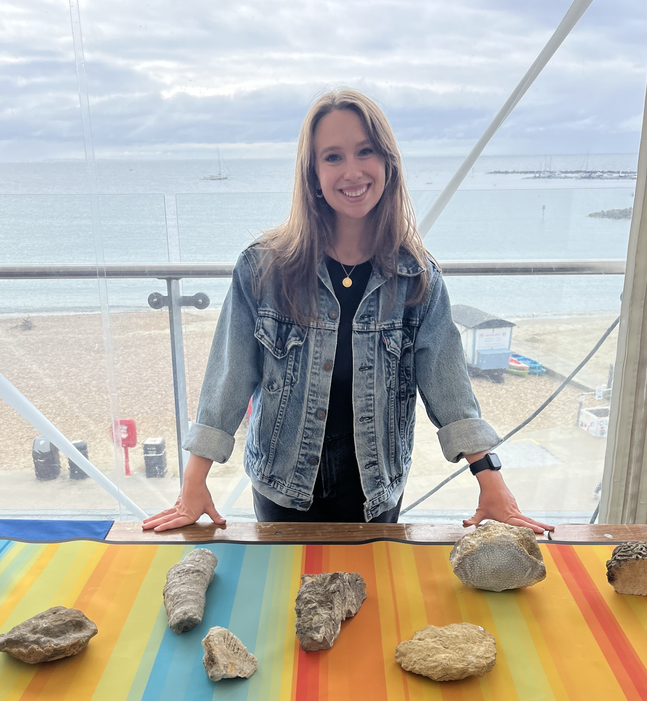

Hi there, I'm Alison Cribb.
I am an 1851 Research Fellow at the University of Southampton's School of Ocean and Earth Sciences. I am a palaeoecologist and geobiologist – meaning I am primarily interested in interactions between organisms and the environment and how those interactions drive the ecological and evolutionary change we observe in the fossil record. In particular, I am especially interested in the interplay between biotic interactions and their environmental controls, and how those community-scale dynamics are reflected on macroecological scales in the fossil record. Currently, I am working to understand the ecological significance of ancient marine ecosystem engineers, or organisms whose behaviours impact resource abundance and availability. These are a fascinating ecological group to study, as the consequences of their behaviours can have profound impacts on community ecology. Check out my projects section to learn more about my work, and please contact me if you would like to get involved!